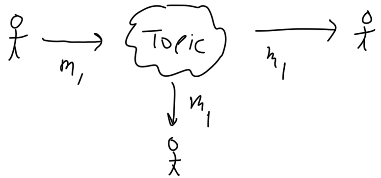
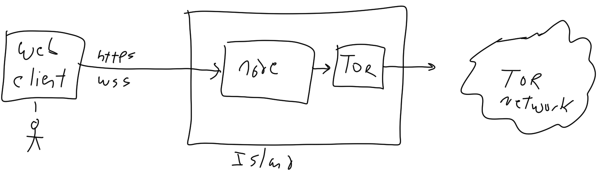
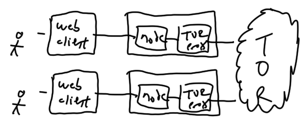

Chat provides secure and anonymous communications between a group of invited participants.
The following characteristics are are present:
Summarized: Islands Chat enables people who hold private keys to interact with other people who hold private keys when exposing only their public keys.
The chat will be ordered only to the extent that messages sent from a sender will arrive ordered by that sender (including requesting of any lost messages and re-ordering of messages out of order).
In particular, there is no absolute ordering of the chat. This means that the race condition where Particpant 1 and Participant 2 both send at the same time is not resolved. Each participant will see a different ordering of messages and will store a different ordering of messages. But the promise that each participant's messages will be ordered is not broken. All complaints that "He saw the other person's comments arrive before mine and I sent mine first!" will be considered a mental defect by the complainer.
| Term | Definition |
|---|---|
| Participant |
Participants are the entities (normally people but may be a program that have an asymmetric key pair and are enrolled in the chat topic. |
| Asymmetric key pair |
An asymmetric key pair is a pair of keys, one public and one secret (note, the secret key is normally called the private key but the term secret was chosen so that we can easily refer to a key within a pair as kp(p) for public and kp(s) for secret). The key pair allows us to cryptographically make certain claims, in particular:
These claims enable using a secret key to sign a hash. There is never any reason to hide or restrict access to a public key. The entire point of asymmetric keys is that the only secret is the secret key. At no time will or should anything request a secret key as part of any exchange in the system. These keys are slow to encrypt and decrypt with and take a lot of computing time to create. They are used almost exclusively for signing (encrypting a hash) or protecting symmetric keys. |
| Hash algorithm |
Hashing provides a one-way transformation such that given a block B1 of bytes which is hashed to a hash value H1 there are very few blocks that hash to the same value and it is "very expensive" to find such a block. |
| Symmetric key |
A symmetric key is shared by all parties that need to encrypt or decrypt. Often called the shared key, it's typically encrypted itself by either a private or public key so it can be passed between agents. Symmetric keys are much faster to encrypt/decrypt with and can handle arbitrary sized amounts of data. This contrasts with asymmetric keys wich are slow to create, slow to use, and can only encrypt small blocks of data. These keys are used to encrypt message contents. |
| Agent |
Agents are software implementations that "stand in" for participants. The exchanges of messages, keys, and signatures is documented as if they were between participants but realistically people are not good at tracking and manually apply keys and algorithms. So agents will handle the keys and protocols on the behalf of participants. This is very crucial because managing the plethora of keys involved in even a small number of chat memberships would be overwhelming. The keys used are not stored in a Password Safe. They are not passwords at all, but rather long sequences of bytes. They aren't seen or exposed to people during operation. But they are stored, used, and created by agents. For all of that, at some point the participant must know something secret that they can enter (such as a pass-phrase, a password, a biometric token, or something) to allow them to authenticate themselves to their key management agent. Since Islands has no identification system, users are never expected and should never provide any form of secret to Islands, only to their key management agent. That agent runs on a system they control and is known to them only. |
| Island |
An Island is a process controlled by the participant and run on any machine the participant chooses which acts as the access into the Islands applications. It is absolutely appropriate for a user to never share their island with any other participants. All communication between participants is the result of messages exchanged between Islands using channels that are fully anonymous. TOR is the initial medium used to achieve this. If an island is shared the participants who do not control the Island have no anonymity promise from the owner of the Island. This is because the Island's owner can always see the IP addresses of all connections on their Island using netstat. It is perfectly fine to share an Island via an onion address if the participant configures that. That would allow TOR to provide the anonymity and offset that limitation, but it would also require that only TOR users access the Island. It's intended that some people will expose public Islands to allow non-members to participate as part of the process of increasing usage. The hope is that the non-members will choose to run their own Island and fully participate later. |
These are restrictions define mandates. None of these may be violated.
A participant goes through a process of enrolling in a topic. Once enrolled, they can send chat messages and will see chat message sent by others.
The participant may connect from any number of devices (even simultaneously) and be able to review all chat messages sent and received in order from any of their devices.
The following is three particpants with one sending a message that is delivered to the others. This is a view post-enrollment.
When chatting, the participants are blissfully unaware of the layers. They are entering messages into a web-page served by some Island (normally their own) and seeing messages in the same page.
The Island is much more aware of the underlying infrastructure.
The only IP addresses known are:
The counterparties (the other participants in the diagram above) are reached only via TOR so their IP addresses are both unknown and untracked.
The image below shows the actual initial implementation connecting through TOR.
